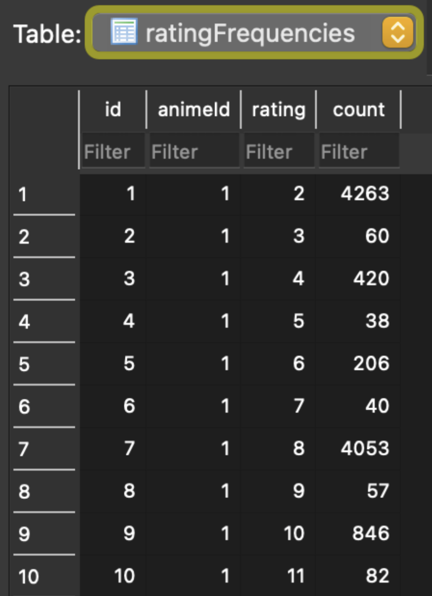

୨୧ · · ♡ · · ୨୧
THE SUNNY CREW
In collaboration with Iris Zheng and Anna Hou.
What factors and trends affect an anime’s ranking?
୨୧ · · ♡ · · ୨୧
- 1. Kitsu API: Does the episode length affect the rating of an anime?
- 2. Jikan API: Does favoring an anime character affect the rating of the anime they are in?
- 3. MyAnimeList API: Does favoring an anime character affect the rating of the anime they are in?
Kitsu Data Collection
୨୧ · · ♡ · · ୨୧
- Table 1 - kitsu animeId, animeName, episodeCount, ratingRank
- Table 2 - ratingFrequencies animeId, rating, count

Jikan Data Collection
୨୧ · · ♡ · · ୨୧
- Table 1 - jikan anime_id, character_id, character_name, favorites
MyAnimeList Data Collection
୨୧ · · ♡ · · ୨୧
- Table 1 - Mal Table anime_id, title, season_id, rank
- Table 2 - Seasons Table season_id, season
Kitsu API Conclusion Visuals
୨୧ · · ♡ · · ୨୧
- There is no significant correlation between episode count and ratingRank and ratingCount
- Range from -1 to 1 Values closer to -1 or 1 indicate strong negative and positive correlation, respectively. 0 = no correlation
- Darker shades = stronger correlation
- The number of episodes has a very very slight impact on the ratingRank and has almost no correlation between ratingCount
- Average episode count for animes is around 25.
Jikan API Conclusion Visuals
୨୧ · · ♡ · · ୨୧
- The average favorite count of characters has little to no correlation with the ranking of an anime, it can be seen that the anime in rank 1 is significantly lower than animes ranked lower.
MyAnimeList API Conclusion Visuals
୨୧ · · ♡ · · ୨୧
- On average, the most popular ranking of anime started in Fall and Summer, both having an approximate average of 54 rank (rounded)
Problems We Faced
୨୧ · · ♡ · · ୨୧
- Initially getting our API to work and access the data we wanted
- Finding and Creating graphs that best represented what information we wanted to portray
- Using 1 Api for 2 tables: hard time trying to figure out what information to put on the 2nd table
- Couldn’t find an API that provided valuable information regarding anime characters
- Jikan API needed to reference MyAnimeList API to retrieve the Anime Id’s for anime characters
- Merging conflict in Github